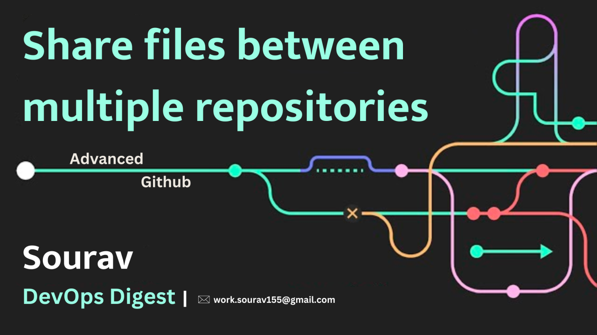

DevOps Digest
Welcome to my blog. Subscribe and get my latest blog post in your inbox.
.png)
TDD vs. BDD : Quality in SDLC
Test-Driven Development (TDD) and Behavior-Driven Development (BDD) have become essential staples in modern software development. These iterative methodologies elevate code quality, foster collaboration, and streamline projects by emphasizing tests and feedback as an integral part of the development cycle. Let's peep deeper into TDD and BDD, their use-case, strengths and real-life scenarios.
Read more →

Newbie's View of Google Cloud Services
Google Cloud Platform (GCP) provides a massive and ever-expanding toolkit for building, deploying, and managing applications at scale. Understanding these services is essential for any organization or developer exploring cloud-based solutions.
Read more →
Infrastructure as Code with Terraform
Managing information technology (IT) infrastructure across multiple clouds, servers, and environments can quickly become complex and unwieldy. But one of the best ways that enterprises can operate and grow infrastructure at scale is an Infrastructure-as-code (IaC) solution called Terraform. But what is Terraform and how does it work?
Read more →

Share files between multiple repositories: Advanced Git
GitHub is a powerful platform for version control and collaboration, widely used by developers around the world. While it's straightforward to work within a single repository, there are times when you may need to share files between repositories. Fortunately, GitHub offers several methods to achieve this. In this guide, we'll explore one such method: sharing a single file from one repository to another.
Read more →

SDKMAN! The Software Development Kit Manager
SDKMAN.io, short for Software Development Kit Manager, is a command-line tool designed to simplify the installation, management, and use of various Java-based SDK tools and services easily. Originally focused on the Java ecosystem, SDKMAN.io has expanded its support to include languages such as Kotlin, Scala, Groovy, and more.
Read more →

Unleashing the Power of Linux: A Comprehensive Guide
In the vast landscape of operating systems, Linux stands out as a powerful and versatile option. Developed as a free and open-source software, Linux has evolved over the years, gaining a loyal following among tech enthusiasts, developers, and enterprise users. In this blog, we will embark on an exploration of Linux, delving into its history, features, advantages, Linux commands, and its impact on the technology ecosystem.
Read more →